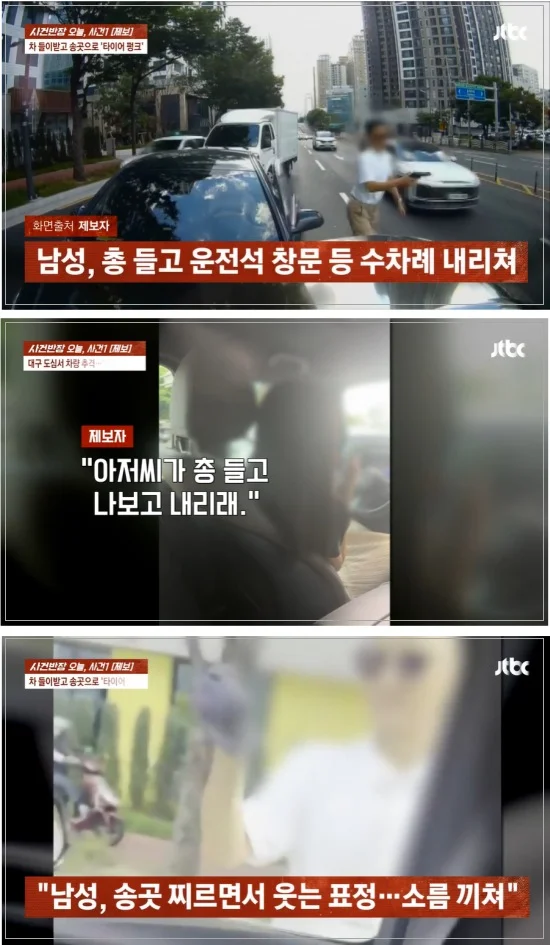
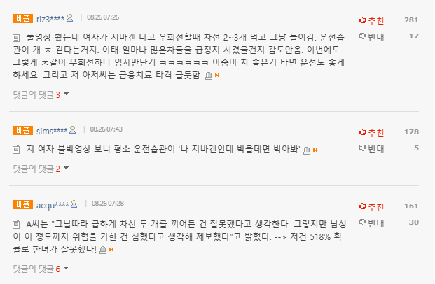

총 겨누더니 송곳으로 타이어 찌르며 웃었다…모녀 덮친 보복운전 : 네이트 뉴스

제보자 A씨는 지난달 27일 대구 수성구에서 중학생 딸을 차에 태우고 집에 돌아가던 길에 충격적인 상황을 겪었다.
A씨는 좁은 도로에서 나와 큰 도로로 합류하려던 중이었다.
왼쪽에서 다른 차가 오지 않는 상황을 확인하고 안전거리를 확보해 천천히 우회전했다.
그런데 도로 진입 후 A씨 차량을 뒤따르던 한 승용차 운전자가 갑자기 크게 경적을 울렸다.
A씨가 평소와 달리, 급하게 두 차선을 끼어든 게 문제가 됐다.
뒤 차량에서는 한 남성 운전자가 내렸다.
그의 손에는 '총'으로 보이는 물건이 들려 있었다.
남성이 총을 겨누며 A씨 차로 점점 다가왔고, 겁에 질린 A씨는 차를 끌고 도망갔다.
남성은 차를 끌고 A씨 차량을 8분간 쫓아왔다.
A씨 차가 앞차에 막혀 속도를 줄이자 뒤에서 두 차례 들이받기까지 했다.
차에서 내린 남성은 또다시 장난감 총을 A씨에게 겨누며 "내리라"며 소리쳤다.
차량 앞 유리와 창문도 여러 차례 내리쳤다.
남성은 이후 자신의 차로 돌아가 후진하더니 A씨 차량을 한 번 더 들이박았다.
차에서 꺼낸 송곳으로 A씨 차량 타이어를 찌르며 펑크 내고 유리창도 훼손했다.
당시 차 뒷좌석에 타고 있던 A씨의 중학교 1학년 딸은 이 상황을 휴대전화로 촬영했고 A씨도 남편에게 전화해 이 사실을 알렸다.
남편은 통화와 동시에 경찰에 신고했다.
경찰이 도착하자, 이 남성은 갑자기 돌변했다.
당시 A씨와 남성은 모두 각자의 차 안에 탑승해있었는데 이 남성은 경찰이 오자 차에서 내려 A씨 차를 촬영하며 마치 교통사고가 난 듯 행동했다.
잠시 뒤엔 남성이 갑자기 아이를 안아서 달래는 모습이 목격됐다.
5살 딸을 차에 태운 상태로 보복 운전을 하며 위협했던 것이었다.
A씨는 "남성이 경찰에게 본인은 피해자고, 그저 뺑소니범을 잡았을 뿐이라고 말하더라. 제가 가해자가 되다니 억울했다"고 주장했다.
다음 날 블랙박스 영상과 딸이 찍은 영상, 목격자 촬영본을 모두 확인한 경찰이 A씨에게 연락해 "이 남성, 빨리 구속해야 할 것 같다"며 A씨의 진단서 등을 추가로 받았다.
경찰은 지난 24일 특수상해 등 혐의로 남성에 대한 구속영장을 신청한 것으로 전해졌다.
A씨는 "그날따라 급하게 차선 두 개를 끼어든 건 잘못했다고 생각한다. 그렇지만 남성이 이 정도까지 위협을 가한 건 심했다고 생각해 제보했다"고 밝혔다.

임자 만난거지 뭐